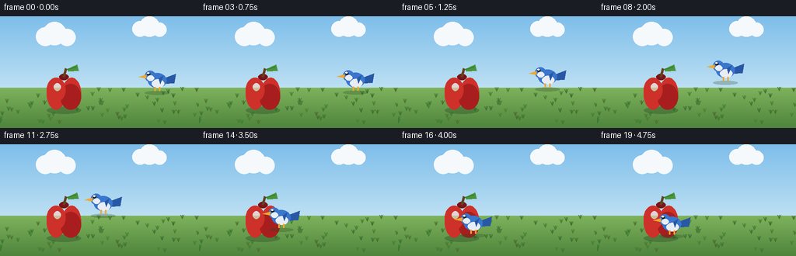
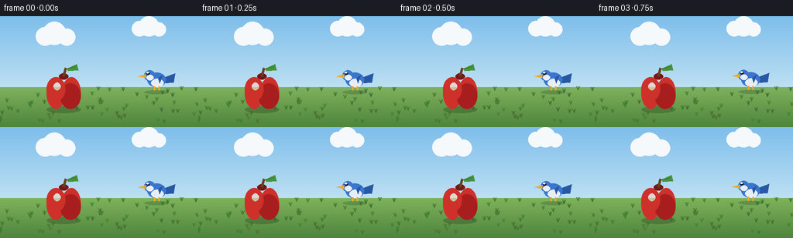
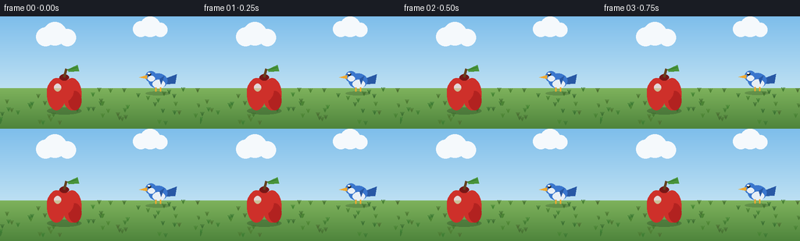
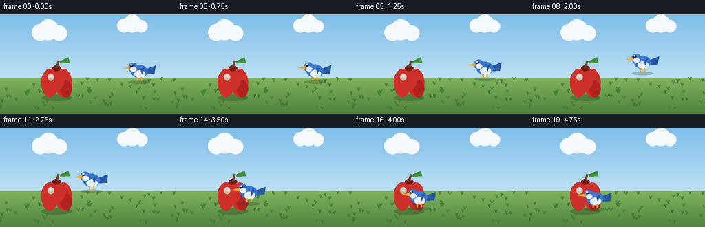

CODING AGENTS AS PIXEL WORLD MODELS
traex/Seed-2.1-Pro-0915 · dynamic_spatial_relationship_0040
点击播放 · 原生 RGB 像素
逐轮保存的候选
回放视频、检查图与代码变化。
每份候选均可单独播放。实际图片检查记录在下方工具轨迹中。
候选 01播放与检查图
点击播放 · 原生 RGB 像素


展开代码变化
--- 上一保存版本
+++ 本次保存版本
@@ -0,0 +1,166 @@
+"""Text-to-video: a bird right of an apple flies to the front of the apple.
+
+Renders 20 RGB frames (256x144, 4 fps) procedurally with PIL. No external
+assets, models, or network access. Run: python generate.py
+"""
+from pathlib import Path
+import math
+
+import numpy as np
+from PIL import Image, ImageDraw
+
+import artifact_io
+
+W, H, N, FPS = 256, 144, 20, 4.0
+SS = 2 # supersampling factor for smooth edges
+
+CASE_DIR = Path(__file__).parent
+
+
+def smoothstep(x):
+ x = min(1.0, max(0.0, x))
+ return x * x * (3.0 - 2.0 * x)
+
+
+def lerp(a, b, t):
+ return a + (b - a) * t
+
+
+def make_background(scale):
+ """Sky gradient, distant clouds, grassy ground."""
+ w, h = W * scale, H * scale
+ horizon = int(92 * scale)
+ img = Image.new("RGB", (w, h))
+ px = img.load()
+ top = np.array([126, 190, 235])
+ mid = np.array([189, 224, 243])
+ for y in range(horizon):
+ t = y / horizon
+ c = (top * (1 - t) + mid * t).astype(np.uint8)
+ for x in range(w):
+ px[x, y] = tuple(c)
+ grass_top = np.array([126, 178, 92])
+ grass_bot = np.array([78, 132, 60])
+ for y in range(horizon, h):
+ t = (y - horizon) / max(1, h - horizon)
+ c = (grass_top * (1 - t) + grass_bot * t).astype(np.uint8)
+ for x in range(w):
+ px[x, y] = tuple(c)
+
+ draw = ImageDraw.Draw(img)
+ for cx, cy, r in [(58, 26, 12), (70, 22, 15), (86, 27, 11),
+ (180, 16, 10), (192, 13, 13), (205, 17, 9)]:
+ x, y, rr = cx * scale, cy * scale, r * scale
+ draw.ellipse([x - rr, y - rr, x + rr, y + rr], fill=(245, 249, 252))
+ rng = np.random.default_rng(7)
+ for gx in rng.uniform(0, W, 60):
+ x = int(gx * scale)
+ y0 = int(rng.uniform(96, 140) * scale)
+ col = (60 + int(rng.integers(0, 20)), 110 + int(rng.integers(0, 25)), 52)
+ for k in range(3):
+ draw.line([(x, y0), (x + (k - 1) * 2 * scale, y0 - 5 * scale)],
+ fill=col, width=max(1, scale))
+ return img
+
+
+def draw_apple(base, cx, cy, scale):
+ """Red apple with stem, leaf, highlight and ground shadow."""
+ layer = Image.new("RGBA", base.size, (0, 0, 0, 0))
+ d = ImageDraw.Draw(layer)
+ s = scale
+ r = 22 * s
+ d.ellipse([cx * s - r, int(cy * s + r * 0.85),
+ cx * s + r, int(cy * s + r * 1.25)],
+ fill=(40, 70, 35, 90))
+ red = (206, 48, 42, 255)
+ red_dark = (168, 30, 30, 255)
+ d.ellipse([cx * s - r, cy * s - r + 3 * s, cx * s + 2 * s, cy * s + r], fill=red)
+ d.ellipse([cx * s - 2 * s, cy * s - r + 3 * s, cx * s + r, cy * s + r], fill=red)
+ d.ellipse([cx * s - r * 0.2, cy * s - r * 0.5, cx * s + r, cy * s + r],
+ fill=red_dark)
+ d.ellipse([cx * s - r, cy * s - r + 3 * s, cx * s + 2 * s, cy * s + r * 0.55],
+ fill=red)
+ d.ellipse([cx * s - 6 * s, cy * s - r - 2 * s, cx * s + 6 * s, cy * s - r + 6 * s],
+ fill=(120, 22, 22, 255))
+ d.line([(cx * s, cy * s - r + 2 * s), (cx * s + 3 * s, cy * s - r - 9 * s)],
+ fill=(101, 66, 32, 255), width=3 * s)
+ lx, ly = cx * s + 4 * s, cy * s - r - 8 * s
+ d.polygon([(lx, ly), (lx + 13 * s, ly - 6 * s), (lx + 15 * s, ly + 2 * s),
+ (lx + 2 * s, ly + 3 * s)], fill=(72, 148, 58, 255))
+ d.line([(lx, ly), (lx + 12 * s, ly - 3 * s)], fill=(48, 110, 42, 255), width=s)
+ d.ellipse([cx * s - 13 * s, cy * s - 12 * s, cx * s - 4 * s, cy * s - 2 * s],
+ fill=(255, 205, 195, 150))
+ base.alpha_composite(layer)
+
+
+def draw_bird(base, cx, cy, scale, flap, facing=-1, size=1.0):
+ """Cartoon bird. facing: -1 left, +1 right. flap in [0, 1) wing phase."""
+ layer = Image.new("RGBA", base.size, (0, 0, 0, 0))
+ d = ImageDraw.Draw(layer)
+ s = int(round(scale * size))
+ x, y = cx * scale, cy * scale
+ body = (58, 118, 205, 255)
+ belly = (232, 238, 245, 255)
+ wing = (40, 88, 165, 255)
+ beak = (240, 168, 48, 255)
+ d.ellipse([x - 16 * s, y + 14 * s, x + 16 * s, y + 19 * s],
+ fill=(40, 70, 35, 70))
+ d.polygon([(x - facing * 8 * s, y - 2 * s),
+ (x - facing * 24 * s, y - 8 * s),
+ (x - facing * 22 * s, y + 4 * s),
+ (x - facing * 9 * s, y + 5 * s)], fill=wing)
+ d.ellipse([x - 12 * s, y - 9 * s, x + 12 * s, y + 10 * s], fill=body)
+ d.ellipse([x - 7 * s, y - 1 * s, x + 9 * s, y + 10 * s], fill=belly)
+ hx = x + facing * 9 * s
+ d.ellipse([hx - 7 * s, y - 12 * s, hx + 7 * s, y + 2 * s], fill=body)
+ d.ellipse([hx - 4 * s, y - 6 * s, hx + 5 * s, y + 1 * s], fill=belly)
+ d.polygon([(hx + facing * 5 * s, y - 7 * s),
+ (hx + facing * 15 * s, y - 4 * s),
+ (hx + facing * 5 * s, y - 2 * s)], fill=beak)
+ ex = hx + facing * 2 * s
+ d.ellipse([ex - 2 * s, y - 10 * s, ex + 2 * s, y - 6 * s], fill=(20, 24, 30, 255))
+ d.ellipse([ex - 1 * s + facing * s, y - 10 * s,
+ ex + 1 * s, y - 8 * s], fill=(255, 255, 255, 255))
+ angle = math.sin(flap * 2 * math.pi)
+ wx, wy = x - facing * 2 * s, y - 2 * s
+ tip_x = wx - facing * int((6 + 5 * abs(angle)) * s)
+ tip_y = wy - int((4 + 10 * angle) * s)
+ d.polygon([(wx, wy), (tip_x, tip_y),
+ (wx - facing * 2 * s, wy + 7 * s)], fill=wing)
+ d.line([(x - 3 * s, y + 9 * s), (x - 3 * s, y + 14 * s)],
+ fill=beak, width=2 * s)
+ d.line([(x + 3 * s, y + 9 * s), (x + 3 * s, y + 14 * s)],
+ fill=beak, width=2 * s)
+ base.alpha_composite(layer)
+
+
+def render_frame(i):
+ t = i / (N - 1)
+ fly = smoothstep((t - 0.12) / 0.76)
+ bg = make_background(SS).convert("RGBA")
+
+ apple_x, apple_y = 82, 98
+ start_x, start_y = 202, 82
+ end_x, end_y = 96, 102 # in front of the apple (overlapping its lower area)
+
+ cx = lerp(start_x, end_x, fly)
+ cy = lerp(start_y, end_y, fly) - 22 * math.sin(math.pi * fly)
+ scale_size = lerp(0.92, 1.18, fly) # grows as it comes toward the viewer
+ flap_phase = (i * 0.5) % 1.0
+
+ draw_apple(bg, apple_x, apple_y, SS)
+ # Bird is drawn after the apple, so when overlapping it appears in front.
+ draw_bird(bg, cx, cy, SS, flap_phase, facing=-1, size=scale_size)
+
+ out = bg.convert("RGB").resize((W, H), Image.LANCZOS)
+ return np.asarray(out, dtype=np.uint8)
+
+
+def main():
+ frames = np.stack([render_frame(i) for i in range(N)], axis=0)
+ artifact_io.save(frames, CASE_DIR)
+ print(f"Saved {frames.shape[0]} frames at {W}x{H}, {FPS} fps -> {CASE_DIR}")
+
+
+if __name__ == "__main__":
+ main()
候选 02播放与检查图
点击播放 · 原生 RGB 像素


展开代码变化
--- 上一保存版本
+++ 本次保存版本
@@ -73,12 +73,12 @@
cx * s + r, int(cy * s + r * 1.25)],
fill=(40, 70, 35, 90))
red = (206, 48, 42, 255)
- red_dark = (168, 30, 30, 255)
+ red_dark = (178, 34, 32, 255)
d.ellipse([cx * s - r, cy * s - r + 3 * s, cx * s + 2 * s, cy * s + r], fill=red)
d.ellipse([cx * s - 2 * s, cy * s - r + 3 * s, cx * s + r, cy * s + r], fill=red)
- d.ellipse([cx * s - r * 0.2, cy * s - r * 0.5, cx * s + r, cy * s + r],
+ d.ellipse([cx * s + r * 0.25, cy * s - r * 0.1, cx * s + r, cy * s + r],
fill=red_dark)
- d.ellipse([cx * s - r, cy * s - r + 3 * s, cx * s + 2 * s, cy * s + r * 0.55],
+ d.ellipse([cx * s - r, cy * s - r + 3 * s, cx * s + r * 0.55, cy * s + r * 0.6],
fill=red)
d.ellipse([cx * s - 6 * s, cy * s - r - 2 * s, cx * s + 6 * s, cy * s - r + 6 * s],
fill=(120, 22, 22, 255))
可观测工具轨迹
实际执行的命令与返回图片。
命令 1exit 0
/bin/bash -lc 'cat prompt.txt GENERATION_RULES.json 2>/dev/null; ls'
命令 2exit 0
/bin/bash -lc 'cat GENERATION_RULES.md; echo ======; cat task_spec.json'
命令 3exit 0
/bin/bash -lc 'cat artifact_io.py; ls -la'
命令 4exit 0
/bin/bash -lc 'cd . && time python generate.py'
命令 5exit 0
/bin/bash -lc 'cd . && python generate.py && ls -la pixels.npz frames | head -30'
视觉工具实际返回图片 1

视觉工具实际返回图片 2

保存候选 2 份；完成命令 5 次；可验证图片返回 2 张。原始 API 响应与完整日志保留在本地。